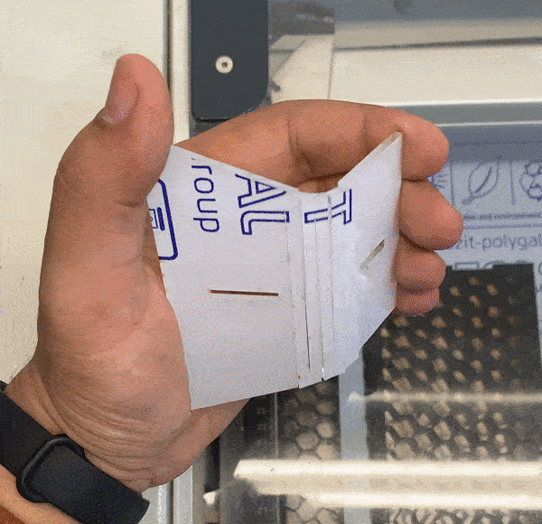
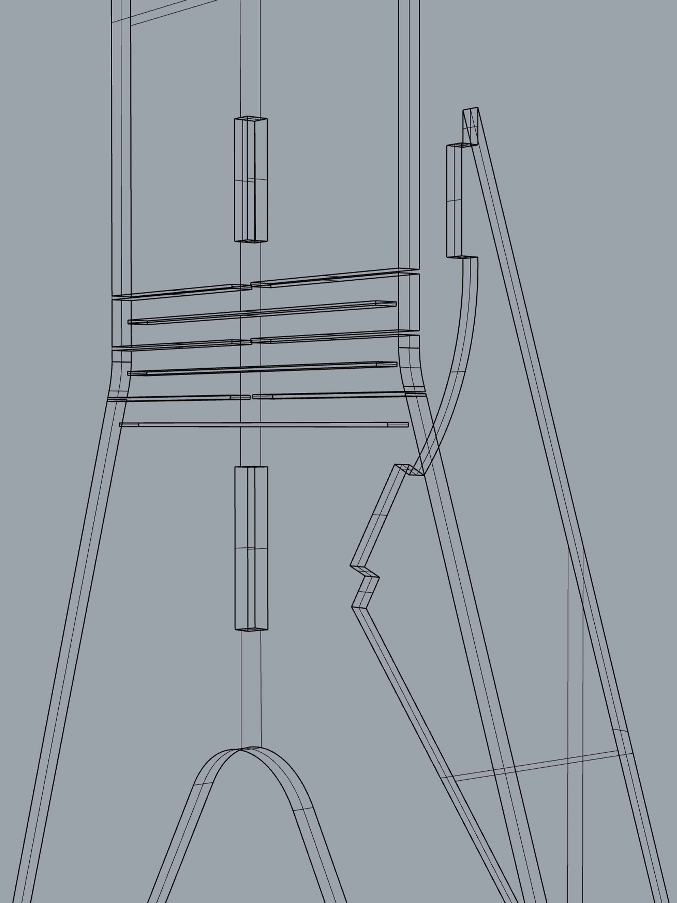
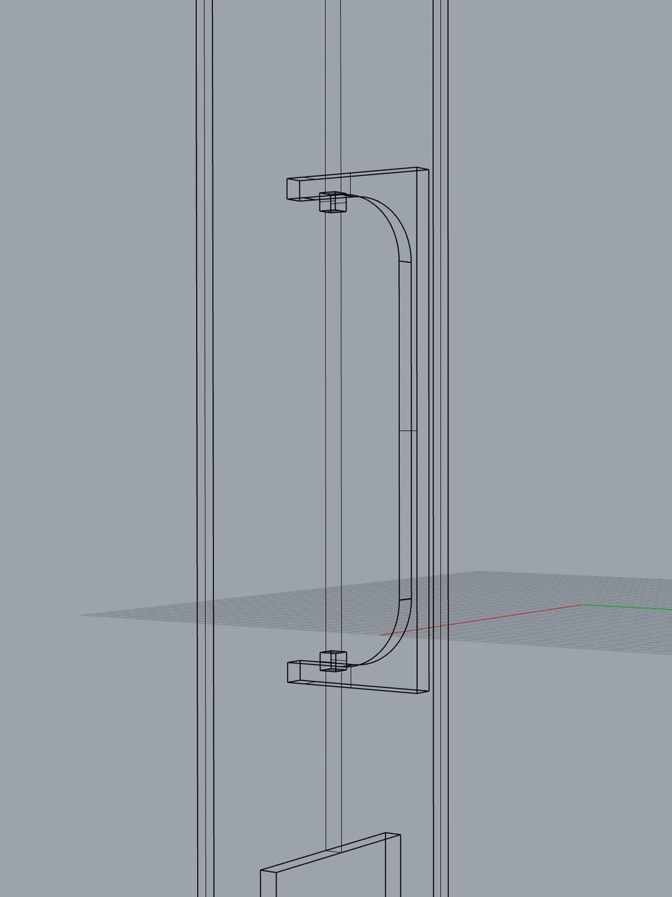
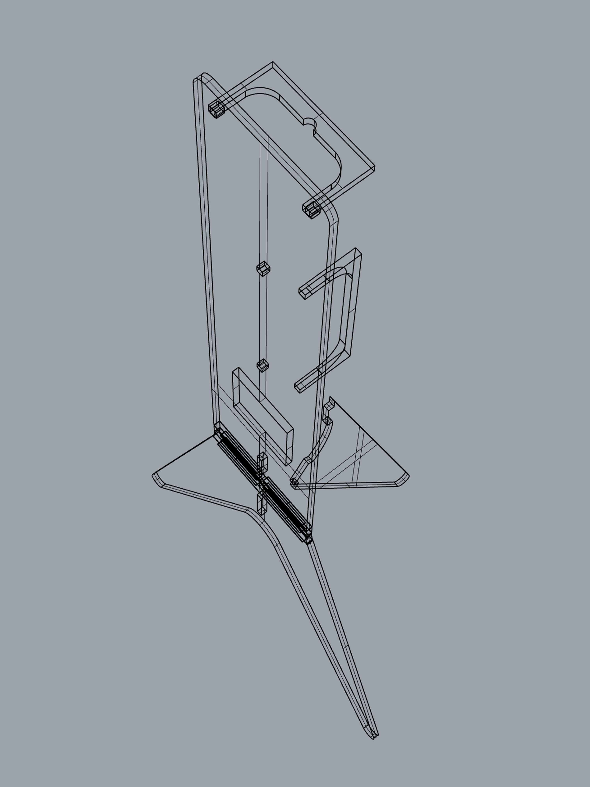
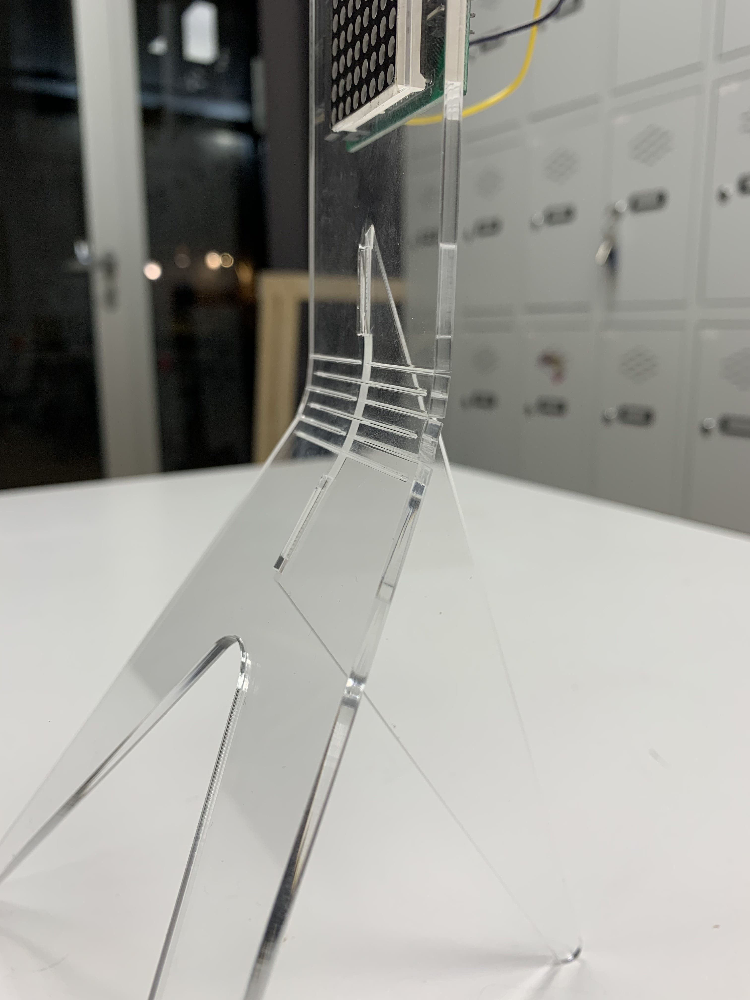
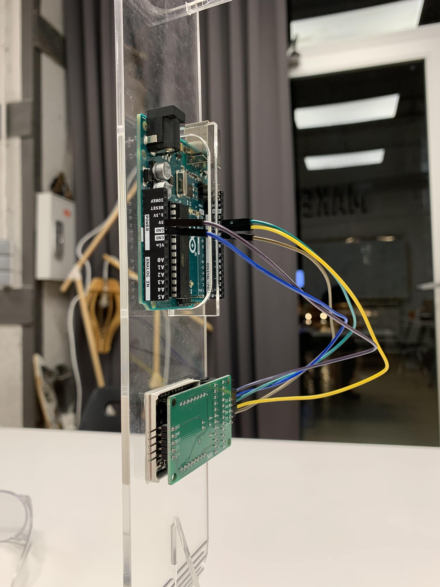
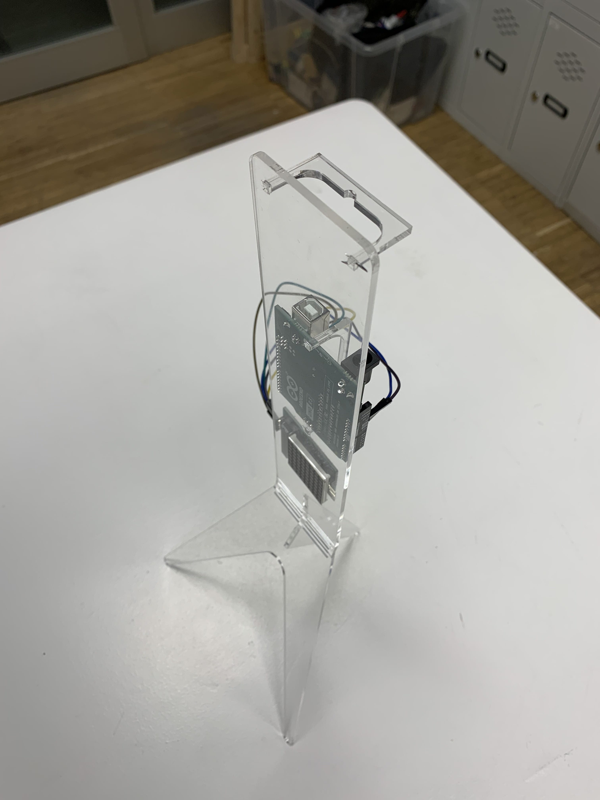

WEEK III
Computer-controlled Cutting
The third week introduced concepts of Computer-controlled cutting using the small and medium format Laser Cutter. The process is a combination of various parameters combined so well together, that changing of one number, degree or unit can completely change the desired outcome. And then too, these numbers vary from the slightest of change in the material or the machine. I wanted to experiment and explore the assignment with something non-traditional.

The design process involved some basic ideation and first-hand prototyping with cardboard to crack the angles and geometry. The standee was supposed to host an Arduino Uno R3 and a 8x8 LED matrix. The design incorporated a combination of 120° angle with three press-fit joineries. The most challenging part was acing the kerfing pattern in a 3mm acrylic sheet.
The design was fabricated two times in total because the first attempt had many complications that lead to an undesirable result. The single-lined linear kerfing pattern provided an unnecessary three dimensional movement. In the second attempt, a dashed linear pattern was used that only provided a two dimensional movement.
The edge of the joinery where the bending was supposed to sit was at a very sharp angle in the first iteration, while the bending was radial and rounded. And, hence that perfect curvature was provided in the latest iteration to prevent breakage.
There were 4 components in total that were supposed to fit into each other using press-fit and finger joineries to hold the structure itself, Arduino and other electrical components together. For this purpose, a 0.2mm margin and 0.01mm offset was utilised.

Fig. 3.3 A few details from the fabrication micro-challenge